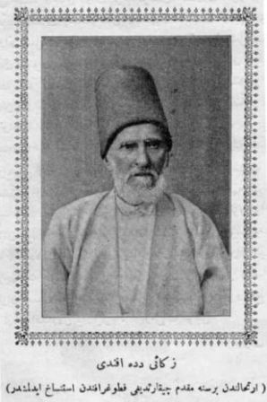

Eyüp sakinleri, kendi hayat çerçeveleri içinde yaşarlardı. Mecbur olmadıkça İstanbul’a gelmezler ve İstanbul halkı ile ihtilatta bulunmazlardı (karışmazlardı). Hatta her gün beldelerine gelen ziyaretçi kafileleriyle de sıkı fıkı dost olmazlardı.
Eyüp beldesinde, bütün hayat uhrevi bir sükûn içinde geçerdi. Bunun içindir ki İstanbul’un zühd[14] ve takvaya meyyal halkından bazıları da kendilerine Eyüp’te bir ev, bark tedarik ederler ve oraya yerleşerek bütün hayatlarını o zahidâne sükûn içinde taat ve ibadetle geçirirlerdi.
Eski Eyüplüler, bir vakit bile namazlarını terk etmezlerdi. Büyük camide namaza gidemiyenler, mutlaka mahallelerinin mescitlerine devam ederlerdi. Bu mescitler, aynı zamanda bir müşavere (danışma) mahalli idi. Namazlardan sonra daima cemaat dağılmaz, mahalle işleri hakkında müzakerelere girişilirdi. Ve verilen kararları tatbik için de cemaat arasından ehli ve erbap kimseler seçilirdi.
Hâlbuki İstanbul’da kahvehaneler icat olunduktan sonra, tabiidir ki, Eyüp’te de ihdas edildi. Birçok eski, Eyüplülerin rivayetlerine nazaran Eyüp’te yapılan ilk kahve bostan iskelesinin biraz üst tarafında ve sahile yakın bir yer de idi.
Bu kahvenin ihdas edilmesi (ortaya çıkması) müşavere meclislerinin de mescitlerden kahveye intikaline sebebiyet verdi. Tütün, kahve, nargile, enfiye müptela ve meraklıları, alıştıkları bu mükeyyifattan (keyif verici maddelerden) uzun saat mahrum kalmaya tahammül edemedikleri için, kahvehane de oturup konuşmayı tercih etmişlerdi.
Kahvehaneler çoğaldıktan sonra da artık mescitlerde yalnız namaz kılınmakla iktifa edilmişti.
Eyüp civarındaki saray ve konakların selamlık daireleri de birer ilim ve irfan mahfeli (derneği) halinde idi. Buralara daima İstanbul’dan edip, şair ve âlim zatlar gelirler, saray ve konak sahipleri tarafından misafir edilirler, Münazaralara girişirlerdi. Eyüplülerin ağır başlı sakinleri de o meclislere iştirak ederek, bir hayli derinleştirilen o ilim ve edip bahislerini büyük bir zevkle dinlerler, büyük istifadeler temin ederlerdi.
Eyüp’teki tekkelerde aynı vaziyettelerdi. Bu tekkelerden birçok tembel ve miskin insanlar barınmakla beraber, ekseriya bunlar, birer ilim ve irfan meclisi şekline girerlerdi. Bilhassa Bahariyedeki, Mevlevi dergâhı, Türk musikisinin en parlak bir dershane mesabesinde (derecesinde) idi.
Fatih, İstanbul’u aldıktan sonra, bu harap Bizans beldesini yeniden imar ve ihya etmek için Anadolu ve Rumeli’den birçok sanatkârlar getirtmişti. Bu münevver ve terakkiperver hükümdar bununla da iktifa etmemişti. Halkı cehaletten kurtarmak için bir tahsil kanunu vazetmişti (koymuştu). Bu kanun mucibince, İstanbul halkı ile medreselerde ilim tahsil edenler askerlikten affedilmişti. Eyüp halkı da Fatih’in yüksek düşüncelerle vazettiği bu kanundan istifade etmişti. Onun için bütün Eyüp sakinleri, İstanbul’un en münevver zümresinden sayılabilirlerdi.
Tahsil işlerine, bizzat Kadılar nezaret ederlerdi. Medreseleri sık sık teftişlerden geçirirler, talebeleri imtihan ederler, devamsızları ve çalışmıyanları derhal medreselerden çıkararak memleketlerine gönderirlerdi.
Bu ilim irfan teşvikçisi kadıların nesilleri kesildikten, tekke postnişinlikleride[15] sahil ve serseri şeyhlerin ellerine geçtikten sonra, Eyüp’te de bir fikir inhitatı (gerilemesi) baş gösterdi. Ve git gide Eyüp semti halkının ruhu ve fikri asaleti dumura uğrayarak (körelerek) orada ilim, irfan, şiir, edebiyatı, yavaş yavaş zevale doğru sürüklendi.
3’üncü Ahmet devrinin zevk ve sefahati, Eyüp sakinlerinin ahlak ve saf itikatlarını değiştirememişti. Civardaki bütün saraylarda her akşam, sabahlara kadar devam eden zevk ve neşe âlemleri kurulmasına rağmen Eyüplüler bunlara katiyen iştirak etmemişlerdi. Hazret–i Hâlid’in mübarek merkadı (kabri) etrafında toplanan bu insanlar içinde yaşadıkları ruhani hayatın uhrevi zevkini içki ve kadın eğlenceleri gibi dünyevi fâni zevk ve eğlencelere tercih etmemişler, hatta kasabalarına içki girmesine bile müsaade etmemişlerdi.
Bir aralık yeniçeri zorbaları yanlarına açık saçık kadınlar alarak Eyüp Sultan’a gelip orada kebapçı ve kaymakçı dükkânlarında oturmayı adet edinmişlerdi. Eyüp kadısı, bunları menetmek istedi. Lâkin yeniçeri zorbaları tarafından şiddetli bir muhalefetle karşılaşınca, derhal vaktin Şeyhülislam’ına müracaat ederek Eyüp semtinin zahidane hayatını ihlal eden bu menfur hareketin men’i için kendisine yardım edilmesini istedi.
Şeyhülislam da, buna muktedir değildi. Yeniçeri zorbalarıyla başa çıkabilmek, çok güç bir işti. Bu güç işi başaramıyacağına kanaat getiren Şeyhülislam da padişaha müracaat etti. Padişah derhal, açık saçık kadınların kebapçı ve kaymakçı dükkânlarında oturmalarının caiz olmıyacağına dair bir ferman ısdaretti (çıkardı). Aynı zamanda bu fermanın hükümlerini tatbik edebilmek için de orada bir kolluk yani karakol tesisi için emirleri verdi. Bu suretle oradaki bir fuhuş başlangıcının önüne geçebildi.
Tanzimat devri Türkiye’de bir yenilik husule getirmişti. Türklerin adet, usul ve ananelerinden, kılık ve kıyafetlerine kadar birçok şeylerini değiştirmişti. Hatta evlerindeki eski şark dekorlarını kamilen garp dekorlarıyla tebdil edenler az değildi. Evvelce yere kurulan bir sofranın etrafına bağdaş kurularak yemek yenildiği halde, bu adet bile değişmiş, yer sofrası alafranga sofra adı verilen masada yemek yemeye tahvil eylemişti.
Eyüp halkı, Tanzimat devrinin bu icaplarını kabul etmekte acele göstermedi. Eyüplüler, asırlardan beri alışmış oldukları kıyafetlerden, en basit usul ve adetlerine kadar hiçbir şeylerini değiştirmedi.
Tanzimat devri bizde, içtima hürriyetinin başlangıcı idi. Asırlardan beri Osmanlı imparatorluğunu diledikleri gibi idare etmiş olan padişahlar, Avrupa’nın muhtelif yerlerinde zuhur eden ihtilallerden ürkerek ve mutlakiyetten Meşrutiyete intikal etmiş olan Avrupa büyük devletlerinin ıslahat tavsiyelerine riayet ederek Tanzimat denilen yeni bir devire girmek mecburiyetini hisseylemişti.
Bu devir, birkaç sene zarfında İstanbul’un çehresini değiştirmişti. Bir taraftan, büyük şehrin hali ve vakti müsait olan münevver aileleri alafranga namı altında garplılaşmaya doğru temayül gösterirlerken, diğer taraftan da şehrin muhtelif yerlerinde gazino adı verilen Avrupavari kahvehaneler, yeni tarzda meyhaneler ve şehrin hemen her semtinde gizli ve açık umumhaneler belirmişti.
O zamana kadar gerek umumi ve gerek hususi yerlerde oynanan oyunlar, bilhassa dama, tavla, satranç, peçiç gibi şarkın zeka oyunlarına inhisar ettiği halde, Tanzimat’tan sonra, İstanbul’un içtimai hayatına iskambil denilen kağıtlarla oynanan muhtelif oyunlar da girmişti.
Eyüp semti, bunların hiç birine rağbet göstermedi. Eyüplüler, dini ve milli asaletlerini muhafaza ederken Hazret–i Hâlid’in ruhaniyetine hürmet ve riayet göstermişlerdi. Ahlak ve şeriatın hoş görünmiyeceği zevk ve sefahatlere hiçbir yer vermemişler, muhitlerinin nezahetini (temizliğini) haleldar etmemişlerdi.
Eyüp’te, kasabanın kurulduğu günden bugüne kadar hiçbir meyhane ve hiçbir umumhane açılmadığı gibi, hiçbir kahvesinde de iskambil kâğıdı ile oyun oynanmamıştır.
Orada, yakın zamanlara kadar, yirmi yaşına vasıl olmamış olan gençler, kahvelere giremezlerdi. Büyüklere karşı hürmet ve rivayet göstermeye o derece riayet edilirdi ki, sokakta giden yaşlı adamın önüne, kendisinden yaşça küçük olanlar geçemezlerdi.
Mahallelerde çocuklar bile bağırıp çağırarak oynamazlardı. Adeta, Hazret–i Hâlid’in uhrevi sükûnunu haleldar etmekten korkarlardı. Bir Eyüplü, hiçbir zaman yalan söylemez ve boş yere yemin etmezdi.
Daha çocuk yaştan itibaren iyi bir din terbiyesi almış olan, Eyüplüler, hiçbir sebep ve bahane ile namazlarını ve oruçlarını terk etmezlerdi.
Hazret–i Hâlid’in türbesine yakın yerlerde oturanlar herhangi sınıf ve zümreye ait olurlarsa olsun sabahları işlerine giderlerken, Alemdar–ı Resûlullah’ın türbesini ziyaret ederler, o gün işlerinin yolunda gitmesi için dua ettikten sonra, dükkânlarına tezgâhlarına ve işlerinin başına giderlerdi.
Meşguliyetlerinden serbest kalan Eyüplüler, en masum eğlencelerle vakit geçirirlerdi. Tatil günlerinde ekseriya büyüklü küçüklü gruplar halinde Kâğıthane’ye ve yahut Silahdarağa’ya giderler, orda kuzular çevirirler, evlerinde yaptırdıkları dolmalar ve helvalarla birbirlerine ziyaret çeker, semaverler kaynatarak bol bol çay içerlerdi.
Seyid Battal Gazi vesaire gibi İslam kahramanlarının şecaat ve hamasetlerine dair yazılmış olan kitapları okumakla vakit geçirirlerdi.
